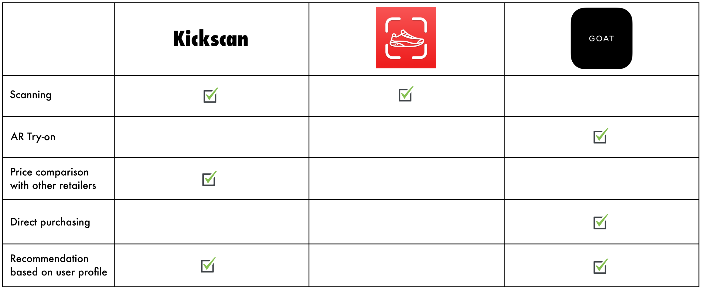
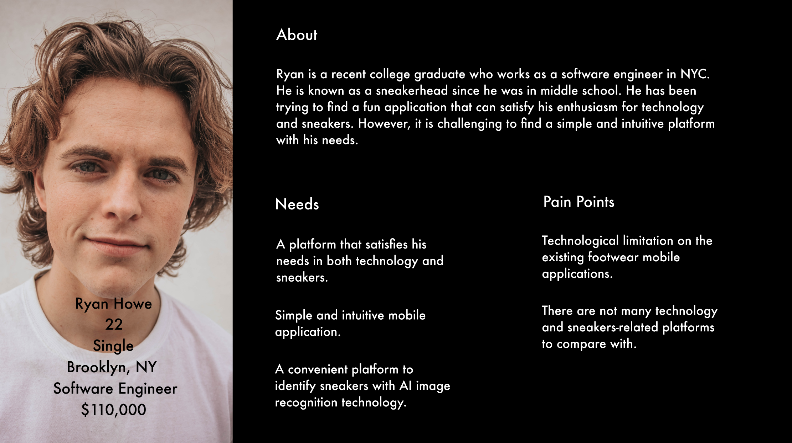
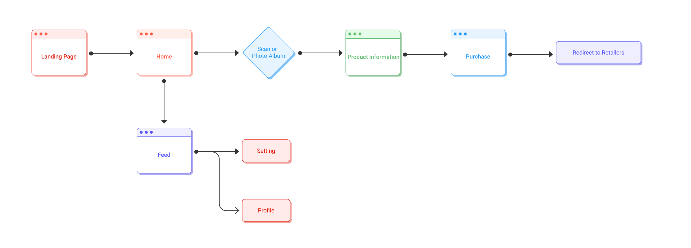
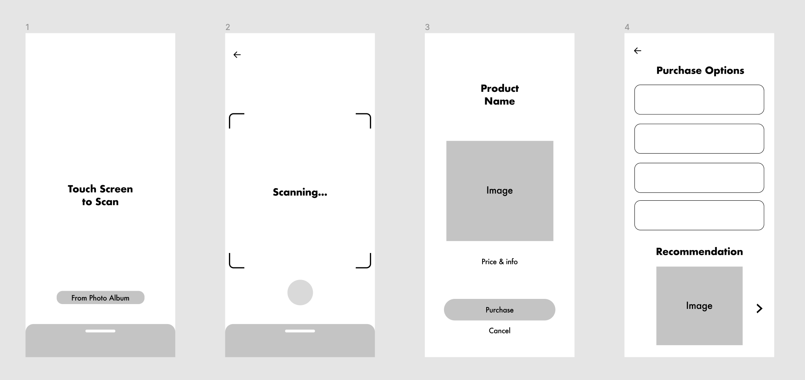

Kickscan
About
According to Businesswire, the footwear market is projected to reach $405.2 Billion by 2025. Kickscan is a mobile application that users scan sneakers to identify the product. After scanning, the application suggests the available online retailer. Users can compare the price and purchase the product via the retailer's website.
The Problem
Most of us have an experience when we spot the product we like on the street or found product images online. There is a limited way that we can access information on those items. It is a frustrating experience that we cannot find information about the item. Also, where we can purchase the product. The research found that there are limited platforms with the data-driven image recognition feature in the footwear industry.
Competitive Analysis
There are not many direct competitors in the sneakers scan market due to the lack of technological advancement in the fashion and footwear industries. The Sneakerr app is the direct competitor in this market. However, they have limited features and technology so users are not fully satisfied with their application. This application only provides the sneaker data from one specific retailer, so users are not able to compare the price with other retailers and cannot purchase from other retailers. The Goat app can be an indirect competitor with its AR try-on feature. The Goat app is the sneakers resale platform that provides an AR feature so that users can virtually try them on before they purchase sneakers online through their application. This application does not have a scan feature yet, however, Kickscan will expand its business to the AR try-on technology combined with the scanning technology.
Persona
I created a persona based on the research. Persona guides the design process by identifying what the target market needs.
User Flow
Users can access the application without logging in. The reason behind this decision is to make the application more accessible. Some users prefer not to create a user account. Therefore, users can download the application and scan the sneakers instantly without any further steps. If users want the user account, then they can create one under the profile.
Low Fidelity Wireframe
The biggest challenge is when users get frustrated and delete the application right away due to non-intuitive features. My goal is to create the application as simple as possible so that users do not have to think about how to use the application. When I sketched the low fidelity wireframe, I made sure this idea applies to the design.
